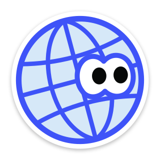

Étude de casCase study09 / 09
Nooks


Une carte de lieux insolites remplie par ceux qui les connaissent : points de vue oubliés, boutiques bizarres, cabinets de curiosités, passages couverts. A map of unusual places filled in by the people who know them: forgotten viewpoints, odd shops, cabinets of curiosities, covered passages.
On cherche une ville, on filtre, et on tombe sur des endroits qui ne sont dans aucun guide. Chaque lieu est proposé par quelqu'un qui le connaît, avec une photo obligatoire : c'est elle qui devient le marqueur sur la carte.
You search for a city, filter, and land on places that are in no guidebook. Every place is suggested by someone who knows it, with a mandatory photo: it becomes the marker on the map.
Les doublons. Sur une carte ouverte à tous, le même endroit finit posté cinq fois. Le formulaire prévient dès qu'il repère un lieu du même nom à moins de 500 m, ou de la même catégorie à moins de 75 m, et propose de noter l'existant plutôt que d'en créer un second. Si on insiste quand même, le lieu part en modération.
Duplicates. On a map open to everyone, the same spot ends up posted five times. The form warns as soon as it finds a place with the same name within 500 m, or the same category within 75 m, and offers to rate the existing one instead of creating a second. If you insist anyway, the place goes to moderation.
La recherche spatiale. La carte envoie le rectangle qu'elle affiche, l'API en fait un polygone PostGIS interrogé sur l'index GiST. Le rectangle est borné côté serveur, pour qu'une requête trop large ne ramène pas toute la base.
Spatial search. The map sends the rectangle it shows, and the API turns it into a PostGIS polygon queried on the GiST index. The rectangle is capped on the server, so an overly wide request can't pull the whole database.
var polygon = query.Bounds.ToPolygon();
var places = context.Places
.Where(p => p.Status == PlaceStatus.Approved)
.Where(p => p.Location.Intersects(polygon)); // ST_Intersects, GiST indexLe métier au centre. Les règles (une note par personne, moyenne recalculée, bornes des coordonnées) vivent dans l'agrégat Place, pas dans les endpoints. Une seule image Docker : l'API ASP.NET Core sert aussi le front Angular. Tests unitaires, plus des tests d'intégration sur un PostGIS jetable avec Testcontainers.
Domain first. The rules (one rating per person, recomputed average, coordinate bounds) live in the Place aggregate, not in the endpoints. One Docker image: the ASP.NET Core API also serves the Angular front. Unit tests, plus integration tests on a throwaway PostGIS with Testcontainers.
C'est une preuve de concept, pas un service en production. Le jeton JWT est stocké dans le navigateur, donc exposé au XSS : un cookie HttpOnly serait mieux. Pas de limitation de débit sur l'API, photos stockées en base, fonds de carte sur des offres gratuites. Et la détection de doublons compare des noms : deux noms très différents pour le même endroit passeront à travers.
It's a proof of concept, not a production service. The JWT is stored in the browser, so exposed to XSS: an HttpOnly cookie would be better. No rate limiting on the API, photos stored in the database, map tiles on free plans. And duplicate detection compares names: two very different names for the same spot will slip through.